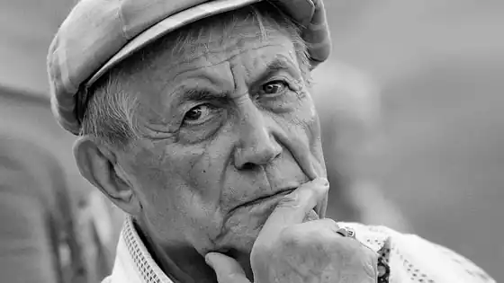

ЄВТУШЕНКО, Євгеній Олександрович (Евтушенко, Евгений Александрович — нар. 18.07.1933, станція Зима Іркутської обл.) — російський письменник.Батьки Євтушенко — геологи, матір пізніше — співачка, заслужений працівник культури РСФСР. Зростав і навчався у Москві, відвідував поетичну студію Будинку піонерів. Був студентом Літературного інституту ім. М. Горького, виключений у 1957 р. за виступ на захист роману В. Дудінцева "Не хлібом єдиним". Перша публікація віршів — 1949 р., в газеті "Советский спорт". Прийнятий у СП СРСР в 1952 р., став наймолодшим її членом.
Перша книга — "Розвідники майбутнього" ("Разведчики грядущего", 1952) мала ознаки декларативної, плакатної, пафосної поезії межі 40—50-х pp. Справді дебютною стала не вона, і не друга книга — "Третій сніг" ("Третий снег", 1955), а третя — "Шосе ентузіастів" ("Шоссе энтузиастов", 1956) і четверта — "Обіцянка" ("Обещание", 1957) книги, а також поема "Станція Зима" ("Станция Зима", 1953—56). У них формуються яскраві особливості поетичного стилю Євтушенко — багатство ритміки, коренева асонансна рима, однакове тяжіння до ораторської патетики та побутовізму розмовної мови, домінування віршів лірично-оповідальних і сюжетно-баладних. У цих творах Євтушенко розробляє улюблену тему: неослабна пам'ять воєнного дитинства, проведеного в евакуації, на "малій батьківщині" в Сибіру ("Чоботи", "Весілля", "Фронтовик"). Саме у цих двох збірках і поемі Є. усвідомив себе поетом нового покоління, яке потім назвуть "шістдесятниками", і голосно заявив про це програмним віршем "Кращим із покоління" (1957).
Світовідчуття молодого Є. формувалося під впливом змін у самосвідомості суспільства, що були викликані розвінчуванням "культу особистості" Й. Сталіна. Їх Євтушенко відчув раніше і гостріше за інших. Звідси наскрізні для нього мотиви відродження життя, в яке повертаються люди "із довгого відлучення від нас" (вірш, присвяч. Я. Смелякову). Відтворюючи узагальнений портрет молодого сучасника "відлиги", Євтушенко пише власний портрет, що увібрав духовні реалії як суспільного, так і літературного життя. Ключові полярні поняття неправди і правди — часу, долі, мистецтва — стають при цьому фундаментальним підґрунтям громадянської позиції поета як позиції соціально-активного руху. Його поглибленням у наступні роки стануть не лише вірші й поеми, а й відважні вчинки на підтримку переслідуваних талантів, на захист достоїнств літератури та мистецтва, свободи творчості, прав людини. Такими є численні телеграми і листи протесту проти суду над А. Синявським, Ю. Даніелем, цькувань О. Солженіцина, радянської окупації Чехословаччини, правозахисні акції заступництва за репресованих дисидентів — генерала П. Григоренка, письменників А. Марченка, підтримка Е. Нєізвєстного, Й. Бродського, В. Войновича. І це, і багато іншого мав на увазі голова КДБ В. Семичастний, заявляючи, що Євтушенко "небезпечніший десяти дисидентів", і Ю. Андропов, сигналізуючи у політбюро ЦК КПРС про "антирадянську поведінку" поета. Полемічний виклик, який Євтушенко уже в час своїх перших дебютів відважно кинув ідеологічним, пропагандистським, моралістичним постулатам сталінізму, стривожили офіційну критику. Неприйняттям тодішньою владою була зустрінута прозова "Автобіографія "Євтушенко, опублікована у французькому тижневику "Експресо" (1963), Учасники пленуму правління СП СРСР під керівництвом О. Корнійчука хором звинувачували поета в ідейному ренегатстві, у наклепах на радянський лад і радянську літературу. Взаємовідносини Євтушенко з критикою — тема особлива і часто драматична. Поет має рацію, нарікаючи на підвищену пристрасність до себе. Справедливий він і в тому, що про себе сказав "значно більше різкого, ніж усі мої критики, разом узяті". Свій ідейно-моральний кодекс поет не раз називав кодексом громадянськості ("Поет в Росії — більше, ніж поет...") і недекларативно підтверджував віршами, опублікування яких, будучи актом громадянської мужності, ставало значною подією як літературного, так і суспільного життя: "Бабин Яр" ("Бабий Яр", 1961), "Спадкоємці Сталіна" ("Наследники Сталина", 1962), "Танки йдуть Прагою" ("Танки идут по Праге", 1968), "Афганська мураха"("Афганский муравей", 1983). Ці вершинні явища громадянської лірики Євтушенко не мали характеру одноразової політичної дії. Так, "Бабин Яр" проростає у вірш "Охотнорядець" (1957). Вірш "Спадкоємці Сталіна" не лише закономірно завершує "антикультівські роздуми" молодого Євтушенко, "і про шляхи минулої Росії, і про сьогоднішню її", а й перекидає місток до середини 80-х pp., якими датовані вірші, що знаменують останні завершальні розрахунки зі сталінським минулим: "Похорон Сталіна", "Донька комдива", "Ще не поставлені пам'ятники", "Вдова Бухаріна". Відкритий, різкий протест проти окупації Чехословаччини і колонізаторської війни в Афганістані під лицемірним, демагогічним гаслом "інтернаціонального обов'язку" підготовлений справді інтернаціональними прагненнями поета, котрий вистраждав на ближніх і далеких дорогах світу тверде переконання: "Нещастя іноземним не буває". Одночасно це й позиція справжнього патріота, котрий уміє, як сказано у вірші поч. 70-х pp. "Відродження", "очима чеха чи угорця на наші глянути штики" і засоромитися їх в ім'я любові до батьківщини. У результаті частих мандрівок країною, інколи дуже далеких — російською Північчю і Заполяр'ям, Сибіром і Далеким Сходом — у доробку Євтушенко з'являлися як окремі вірші, так і великі цикли та збірки поезій. Чимало вражень, спостережень, зустрічей стали сюжетами поем — широта географії цілеспрямовано розвиває у них епічну всеохопність задуму і теми. Творчим імпульсом до створення "Балади про браконьєрство" (1963) стала зустріч з "володарем Печори" — зразковим головою передової риболовної артілі, чиї "героїчні" показники в праці досягнуті хижацьким винищенням рибного багатства краю. Тут споживацьке, варварське ставлення до природи підняте до рівня загальнонародного лиха, екологічне браконьєрство осмислене як браконьєрство економічне, соціальне, духовне. Такий перший, змістовий пласт балади. Другий співзвучний тоді ж написаній "Баладі про вірш Лєрмонтова "На смерть поета " і про шефа жандармів" — протест проти стимульованих хрущовськими зустрічами з інтелігенцією розправ над молодими письменниками, художниками, кінематографістами, композиторами, чиї "зябра" ламаються об "чортові ці чарунки" ідеологічних сітей. Тематична, жанрова, стильова розмаїтість, що вирізняла лірику Євтушенко, повною мірою характеризує і його поеми. Лірична сповідальність ранньої поеми "Станція Зима" й епічна панорамність "Братської ГЕС"("Братская ГЭС", 1964) — не єдині полюси. При всій їхній художній нерівнозначності, кожна з 18 поем Євтушенко має свою індивідуальність. Як не близька до "Братської ГЕС" поема "Казанський університет" ("Казанский университет", 1970), вона при загальній епічній структурі має власну специфічну своєрідність. Недоброзичливці поета зі злорадністю ставлять у вину Євтушенко уже сам факт написання її до 100-річчя від дня народження В. Леніна. Поміж тим, "Казанський університет" — не ювілейна поема про Леніна, який, власне, з'являється лише у двох останніх розділах (всього їх 17). Це поема про передові традиції російської суспільної думки, "пропущені" через історію Казанського університету, про традиції просвітництва та лібералізму, вільнодумства та волелюбства. У російську історію занурені поеми "Іванівські ситці" ("Ивановские ситцы", 1976) і "Непрядва" ("Непрядва", 1980). Перша — більш асоціативна, друга, написана до 800-річчя Куликовської битви, — подієва, хоча в її образну канву, разом з епічними картинами розповідного плану, що відтворюють далеку епоху, включені ліричні і публіцистичні монологи, що поєднують минуле та сучасне. На віртуозному поєднанні голосів публіки, захопленої хвилюючими видовищами — бика, приреченого на смерть; юного, та вже враженого "отрутою арени" тореро, котрий мусить, доки не загине сам, знову й знову "вбивати за обов'язком", і навіть просякнутого кров'ю піску на арені — побудована поема "Корида" ("Коррида", 1967). Її гуманістичний пафос сконцентровано виражений і у фінальному монолозі старого іспанського поета, котрий сприймає світ як всезагальну, безперервну кориду. Через рік "ідея крові", що хвилювала Євтушенко, проникає і в поему "Під шкірою статуї Свободи" ("Под кожей статуи Свободы"), де в єдиний ланцюг кровопролитних трагедій з'єднані вбивство царевича Дмитрія у давньому Угличі і президента Джона Кеннеді у сучасному Далласі. Серед сюжетних оповідей про людські долі можна виокремити поеми "Снігу Токіо" ("Снег в Токио", 1974) і "Північна надбавка"("Северная надбавка", 1977). У першій поемний задум втілився у формі притчі про народження таланту, що звільнився від пут непорушного, освяченого віковим ритуалом сімейного побуту. У другій — звичайна життєва бувальщина виростає на власне російському ґрунті і, подана у потоці буднів, сприймається як їхній достовірний відбиток, що містить багато звичних, легко впізнаваних подробиць і деталей. Синтезом епіки та лірики вирізняються розгорнуті в часі та просторі політичні панорами сучасного світу в поемах "Мама і нейтронна бомба" ("Мама и нейтронная бомба", 1982) і "Фуку!" (1985). Інколи органічність синтезу порушується надлишковим риторизмом і гасловою патетикою, публіцистикою і нараторською багатомовністю. Для кожної поеми Євтушенко знаходить свою формальну домінанту, що не виключає, одначе, багатство і різноманітність форм і всередині кожної окремо взятої поеми. Так було ще в "Братській ГЕС", а потім і в "Казанському університеті", загалом витриманих в класичних традиціях російського вірша. Притчеподібна поема "Сніг у Токіо", повість у віршах "Голубу Сантьяго" ("Голубь в Сантьяго", 1978), поема "Мама і нейтронна бомба "написані верлібром. У поемі "Під шкірою статуї Свободи" Є. захопило експериментальне поєднання власне поетичних розділів, витриманих у різних ритмах, і розділів, написаних ритмізованою прозою. Експеримент, що виправдав себе, був закріплений у поемі "Фуку!". У поетичному словнику Євтушенко слово "застій" з'явилося ще в середині 70-х pp., тобто задовго до того, як воно увійшло в політичний лексикон "перебудови".